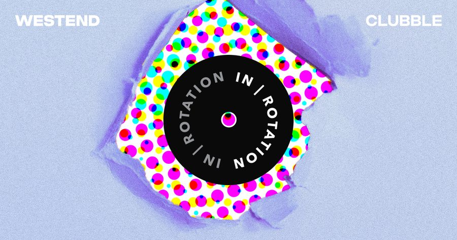

Westend Shows Some Tech House Muscle With ‘Clubble’ EP on IN / ROTATION


New York native Westend is a tech house producer who’s unmistakably on the rise. Naming the legendary city where he’s grown up as his biggest influence, he also points to noughties electro legends like Justice, MSTRKRT, and the Bloody Beetroots as his biggest musical inspirations.
While you can hear these same brash aesthetics in his productions, there’s no doubt he knows how to lay down a serious bottom-heavy house groove. Musically, his productions strike a tight balance between powerful big-room energy and deep, hypnotic grooves—an approach that’s already earned him releases on Club Sweat, Audiophile XXL, Box of Cats, and Country Club Disco.
Last year was his breakthrough, and he’s starting off 2019 with some serious fire in the form of his Clubble EP on IN / ROTATION. Let’s find out more about the man known as Westend.
Westend’s Clubble EP is available here.
How did last year finish up for you, and how is 2019 starting off so far?
Doing amazing, man! 2018 was so good to me, especially the last bit. Got to finish off the year with EDC Orlando and a show at Output right before it closed—both very special gigs. This year has already been really busy! Just got back from a run of shows on the West Coast which were all incredible—so much energy and love on the dancefloors in California and Colorado.
Tell us about the Westend journey so far.
I got into electronic music in the bloghouse days; guys like Justice, Crookers, MSTRKRFT, and the Bloody Beetroots are all lasting influences of mine. Listening to their music inspired me to make it myself, and that has stuck with me ever since.
I went to Duke for college, where electronic music was very sparse (shout-out to my dormmate Spencer Brown, who is killing it). When I moved back to New York in 2016, I started Westend and really began to focus on creating a sound and putting out tracks.
You’re a New York City native. Are you still based there, and what impact has growing up there had on your musical development as a producer?
I have spent my whole life in New York. Apart from the bodega bacon, egg, and cheese saving me from a few hangovers, the city has had a huge influence on my productions and me. Living here has exposed me to so many incredible musicians; it’s impossible to not be inspired. Any day of the week, you can go out and see a DJ giving it their all in an environment where the music is the most important thing. You don’t get that in very many places. Despite this, it’s not a place that producers flock to in order to network, collaborate, and grow. I can count on one hand the number of guys doing similar stuff, music-wise. This allows me to really take in everything this city has to offer and not worry too much about what everyone else is doing.
How would you describe the Westend sound?
That’s a tough one, because I feel like it evolves every day. An easy answer would be, “like tech house with big basslines and quirky synths and vocals.” But I love it when music gives you a sense of nostalgic déjà vu—something you may have never heard before but resonates like it’s been with you forever. You can’t quite pinpoint exactly what it is. This feeling is really hard to get, but sometimes, you are lucky and can nail it. That’s always my goal when writing music.
You’ve got a brand-new three-track EP on IN / ROTATION. Tell us a bit about how you connected with the label and the story behind the fine selection of tracks featured here.
“Clubble” was a track I finished up last fall, and I immediately knew I wanted it as the A-side for my next EP. It always gets great crowd reactions and is a fun break from the often serious/sophisticated vibe that tech house tracks give off. “Beet It” and “Holy Moly!” were tracks that are more groove-oriented while still featuring my own flavor.
IN / ROTATION was always on my radar, and many of my talented friends—such as Wongo, Steve Darko, and Codes—have released rippers on the label. My team got in contact with Insomniac Records, and the rest is history!
What’s up next for Westend?
February 23, I’m playing at Elrow NYC at Avant Gardner. Elrow is one of my favorite parties, and I am so stoked to be on that lineup with some legends. I also have loads of new music—both finished and in the works—that will be out soon, and more shows to announce!
Follow Westend on Facebook | Twitter | SoundCloud
Follow IN / ROTATION on Facebook | Twitter | SoundCloud